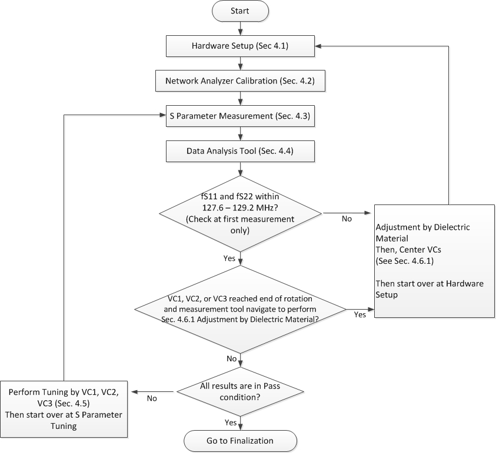
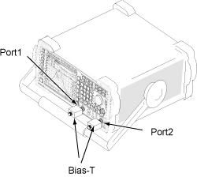
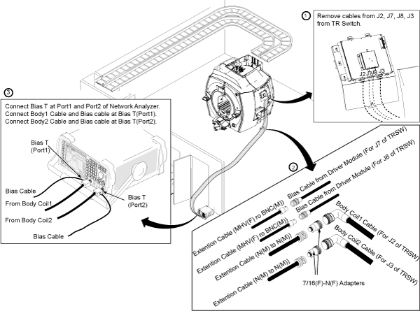

- 00000018WIA3091CE20GYZ
- id_131065293.7
- Oct 2, 2025, 5:15:50 PM
Body coil tuning (network analyzer kit 5336593-2)
Prerequisites
| Required persons | Preliminary requirements | Procedure | Finalization |
|---|---|---|---|
| 1 | - | - | - |
| Item | Quantity | Effectivity | Part number | Manufacturer |
|---|---|---|---|---|
| Network Analyzer Service Tool Kit | 1 | - | 5336593 (5336593-2, 5336593-3, 5336593-4, or 5453348-2) | - |
| Body Loader with Sphere Phantom | 1 | - | 2371511 | - |
| ||||
| Condition | Reference | Effectivity |
|---|---|---|
|
Body Coil Isolation is done. | - | - |
|
System must be in scanning condition | - | - |
About this task

Hardware setup
Procedure
Calibration of network analyzer
Procedure
Connect bias T at port 1 and port 2. Do not connect the bias cable at this time.CAUTION 
Figure 5. Bias T Installation 
Connect the cables to the network analyzer as shown below.Warning 
Figure 15. Hardware setup 
S-Parameter measurement
Operation check
Procedure
Confirmation measurement
Procedure
Data analysis
Procedure
Tuning
About this task
Procedure
Further adjustment
Adjustment by dielectric material
About this task
- fS11, fS22, or fS21 < 127.6 MHz at the first measurement of S-Parameter measurement.
- fS11, fS22, or fS21 > 128.2 MHz at the first measurement of S-Parameter measurement.
- VC1, VC2, or VC3 reached the end of rotation and the Data Analysis Tool indicates you should perform adjustment by dielectric material.
Procedure
Adjustment of MagS21
Procedure
- If MagS21 fails but other values are within specification, perform Body Coil Isolation.
- If MagS21 fails after body coil isolation and body coil tuning, replace the body coil.
Finalization
Procedure
- Select End Exam from the scan window menu (End/End Exam).
- Restore the cables, phantom, and enclosure.
- Run TR Dynamic Disable Calibration.
- Run DD Quadrature Calibration .
- Run Echo Planar Test (EPT).
- Do a quick head and body scan to ensure the system is functioning properly.